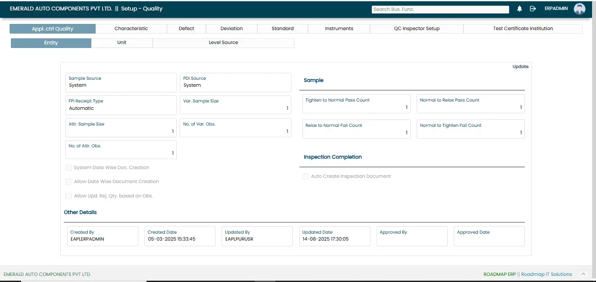
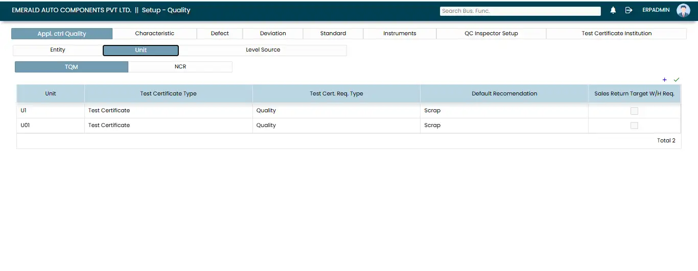

<div data-category="Quality control Management" data-title="Appl.Ctrl. (Quality)" data-updated="December 01, 2025" data-contributors="RoadmapIT" data-breadcrumb="Home,Quality control Management,Appl.Ctrl. (Quality)">
  <div class="page-content">
    <p>This screen is used to define the application control details of Quality Management.</p>

    <h5>Navigation path:</h5>
    <p class="fs-6">Quality control \ Setup \ Setup-Quality</p>

    <!-- Entity -->
    <h2>Entity:</h2>
    
    <ul style="list-style-type: none; align-content: center">
      <li class="mouse-icon">
        <strong>Sample Source</strong>
        – System: Sample document is created automatically.
      </li>
      <li class="mouse-icon">
        <strong>Sample Source</strong>
        – Manual: Sample document is created manually.
      </li>

      <li class="mouse-icon">
        <strong>PDI Source</strong>
        – System: Pre-dispatch inspection sample document is created automatically.
      </li>
      <li class="mouse-icon">
        <strong>PDI Source</strong>
        – Manual: Pre-dispatch inspection sample document is created manually.
      </li>

      <li class="mouse-icon">
        <strong>FPI Receipt Type</strong>
        – Automatic: Final product inspection document is created and received automatically.
      </li>
      <li class="mouse-icon">
        <strong>FPI Receipt Type</strong>
        – Manual: Final product inspection document is created manually and received.
      </li>

      <li class="mouse-icon">
        <strong>Var. Sample Size</strong>
        – Number of samples to be tested for each characteristic and specification.
      </li>
      <li class="mouse-icon">
        <strong>Attr. Sample Size</strong>
        – Number of samples to be tested for each characteristic and specification.
      </li>

      <li class="mouse-icon">
        <strong>No. of Var. Obs.</strong>
        – Number of variable observations to be captured for each sample.
      </li>
      <li class="mouse-icon">
        <strong>No. of Attr. Obs.</strong>
        – Number of attribute observations to be captured for each sample.
      </li>

      <li class="mouse-icon">
        <strong>System Date Wise Document Creation</strong>
        – If enabled, inspection documents are created only on system date.
      </li>
      <li class="mouse-icon">
        <strong>Allow Date Wise Document Creation</strong>
        – Enables creation of inspection documents date-wise.
      </li>

      <li class="mouse-icon">
        <strong>Allow Upd. Rej. Qty Based on Obs.</strong>
        – Automatically moves quantities to rejection if observations fall outside limits.
      </li>

      <li class="mouse-icon">
        <strong>Auto Create Inspection Document</strong>
        – Inspection document is created automatically.
      </li>
    </ul>

    <!-- Unit -->
    <h2>Unit:</h2>
    
    <ul style="list-style-type: none; align-content: center">
      <li class="mouse-icon">Click the add <i class="bi bi-plus fs-4 mx-2 text-primary"></i> icon to create a new record.</li>
      <li class="mouse-icon">Select the Unit for which the control is to be defined.</li>

      <li class="mouse-icon">
        <strong>Purchase Rework Creation</strong>
        – Initiates rework for rejected purchase quantities.
      </li>
      <li class="mouse-icon">Rework Order – Rework order document is created.</li>
      <li class="mouse-icon">Pending Rework Order – Approved automatically and displayed for completion.</li>
      <li class="mouse-icon">Rework Completion – Completion record is created automatically.</li>

      <li class="mouse-icon">
        <strong>Production Rework Creation</strong>
        – Initiates rework for rejected production quantities.
      </li>

      <li class="mouse-icon">
        <strong>Rework Type</strong>
        – Based on selection, quantities are scrapped, disassembled, or repaired.
      </li>

      <li class="mouse-icon">
        <strong>Test Certificate Type</strong>
        – Test Certificate (TQM1040) or Machine Certificate (TQM1036).
      </li>

      <li class="mouse-icon">
        <strong>Test Certificate Required Type</strong>
        – Quality or GRN based on requirement.
      </li>

      <li class="mouse-icon">
        <strong>Default Recommendation</strong>
        – Scrap, Rework, or Disassemble during rework document creation.
      </li>
    </ul>

    <!-- NCR Type Configuration -->
    <h2>NCR Type Configuration:</h2>
    <ul style="list-style-type: none; align-content: center">
      <li class="mouse-icon">Define the NCR type configuration for the process.</li>
      <li class="mouse-icon">Click <i class="bi bi-plus fs-4 mx-2 text-primary"></i> button to create.</li>
      <li class="mouse-icon">Select Unit from the LOV.</li>
      <li class="mouse-icon">Select the NCR Type.</li>
      <li class="mouse-icon">Select mode as Automatic or Manual.</li>
      <li class="mouse-icon">Enable the Required flag.</li>
      <li class="mouse-icon">
        Click
        <i class="bi bi-check-lg fs-4 mx-1 text-success"></i>
        to save.
      </li>
    </ul>

    <!-- Level Source -->
    <h2>Level Source:</h2>
    <ul style="list-style-type: none; align-content: center">
      <li class="mouse-icon">Click the add <i class="bi bi-plus fs-4 mx-2 text-primary"></i> icon to create.</li>
      <li class="mouse-icon">Select the Unit.</li>
      <li class="mouse-icon">Select the Inspection Type.</li>
      <li class="mouse-icon">Select the Inspection Level.</li>
      <li class="mouse-icon">Select the QC Prefix Level.</li>
      <li class="mouse-icon">Select Allow Inspector Next Level flag.</li>
      <li class="mouse-icon">
        Click
        <i class="bi bi-check-lg fs-4 mx-1 text-success"></i>
        to save.
      </li>
    </ul>
  </div>
</div>